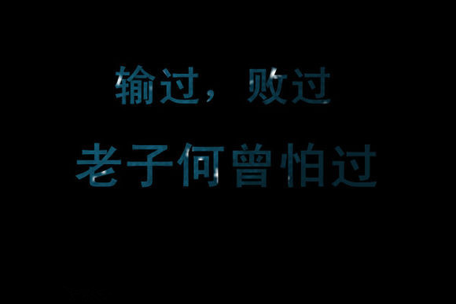
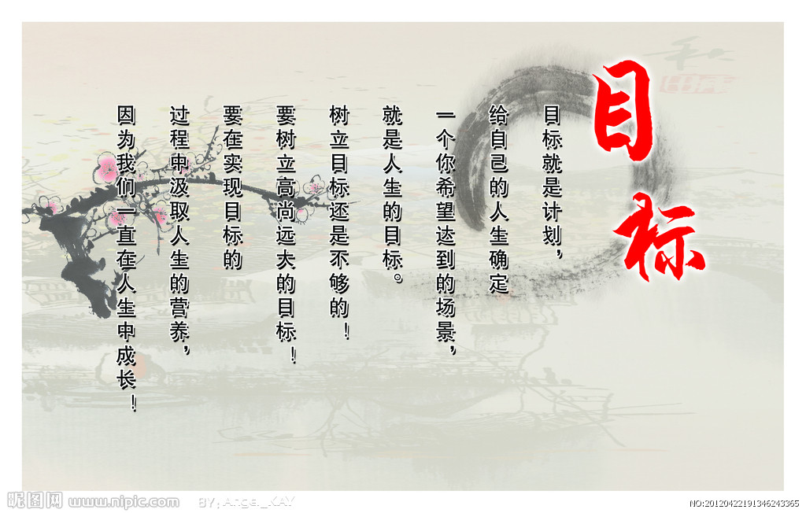

1．小男子汉 |
嘉亮是一个可爱的小男孩，他的生活原本十分快乐，衣食无忧。可是就在嘉亮12岁的那年，父亲突然弃家而去，妈妈终日以泪洗面，一家人的生活顿时陷入困境。 小嘉亮并没有哭，他觉得自己已经是个大人了，决定要像一个男子汉那样支撑起这个破碎的家庭。除了妈妈，嘉亮现在还要照顾奶奶和5岁的妹妹。嘉亮的妈妈在一家小商店里当售货员，每天下班都要晚上9点以后，于是嘉亮每天晚上都会去接妈妈下班。 有一次，一个高大的男人偷商店里的东西，被妈妈发现了，当时商店里没有其他人了，那个男人欲打伤她逃跑，幸而这时嘉亮来了。在远处看到这种情形，嘉亮并没有害怕，立即用公用电话报了警，并趁男人不注意，冲上去把他推倒在地，跟妈妈一起把男人绑了起来。 为了挣多一点钱养家，妈妈又找了一份兼职的工作。嘉亮看着妈妈每天操劳的样子，很是心疼，很想为妈妈分忧。于是嘉亮想方设法，终于找到了一份洗车的工作。他向老板保证说，他绝对不会比成年人干得少，老板听说了他家的境况，就破例同意了。 每天放学以后，嘉亮都要在冰冷的车库里洗车，常常弄得浑身透湿，冰凉的水刺得他双手生疼，手指就像是要断了似的。其实车库里有手套，其他的员工都是戴着手套洗车的，但嘉亮的手太小，戴着它就拿不住水管，因此就无法洗车了。困难并没有使嘉亮退缩，通过努力他连洗大客车也得心应手了，可以很麻利地跳到车轮子上，用洗涤剂洗刷车顶。一天的时间，嘉亮就能用他那双被凉水泡得肿胀的小手擦洗35辆汽车，比其他员工洗得还要多。老板见35辆干活卖力，就给他涨了工资。嘉亮把所有工资都给了妈妈，用于全家开销，自己一分零花钱都不留。 就这样，虽然生活很清苦，但是小嘉亮渐渐地适应了忙碌的日子。他白天上学，放学和周末的时间打工，直到夜晚才做功课。从那天起，嘉亮再也没有时间和精力跟同龄的小伙伴一起踢足球了。 年终的时候，车行老板给了嘉亮一点奖金，嘉亮兴奋地立即给妹妹买了她一直都想要的玩具，又给妈妈买了一瓶她心仪已久的香水，给奶奶买了一件很厚的棉衣，自己却什么都没买。家里人看到这些礼物，泪水一下子流了出来，一家人幸福地吃上了年夜饭。 |
励志感悟：
生活中常常会发生一些变故和挫折，虽然有很多无奈，但是小嘉亮并没有毅志低沉，而是勇敢地接受了他的命运，并用自己弱小的身躯承担起了生活的重担。 男子汉一词是从西汉发展而来的。西汉时期，北方的匈奴族不断侵扰我国的边境。到了汉武帝时期，国力不断强盛，在抗击匈奴的战斗中，西汉的士兵们都非常勇敢，所以汉朝的士兵被匈奴称作“汉儿”或“好汉”。 |
2．上天都是公平的 |
| 约翰逊是英国北部一个小山村里的普通的小男孩儿，童年的约翰逊是幸福而快乐的，他有爸爸、妈妈、一个哥哥、一个姐姐和80多岁的爷爷。 约翰逊从小就很懂事，因为家里的条件艰苦，约翰逊常常要跟哥哥到附近的山林里捡一些蘑菇或其他可以吃的东西。 这一天傍晚，约翰逊被学校留下为学习较差的同学补习功课，没在家吃饭。早上，他和哥哥刚刚捡回了很多又大又丰满的蘑菇，这够家里人吃几顿了。一家人看着这么多的蘑菇都很高兴，妈妈照常先给爷爷喂饭，父亲和其他两个孩子已经迫不及待开始吃饭了。 然而，就在一顿饭刚刚吃到一半的时候，爷爷、爸爸、哥哥和姐姐分别感到胃里难受得厉害，妈妈见状，知道是食物中毒，急忙去找村里的一位大夫，可是等大夫赶到已经来不及了。此时，约翰逊从学校回来了，他蹦蹦跳跳地一路小跑。可是，一开院子门，约翰逊就看到大夫正摇着头告诉妈妈，所有的人都已经无法救治了，爷爷、爸爸还有哥哥和姐姐都因为吃了有毒的蘑菇而死去，约翰逊一下子失去了四位至亲。 事情发生后，妈妈几乎要崩溃了，原本幸福的一家六口人，现在只剩下她和约翰逊了。从此，母子二人相依为命，直到约翰逊十四岁的时候，城里有人来招工，约翰逊谎称自己已经十六岁了，来到了城里开始了打工生涯，而那个城市正是英国的首都――伦敦。 虽然伦敦是一个富裕的大城市，但对于约翰逊这种打工者来说，工作和生活都非常艰苦――他每天几乎要工作16个小时以上，而且工资还少得可怜，除去生活开销，几乎剩不下钱了。尽管这样，约翰逊也并没有退缩，每天勤奋地工作，节俭地生活。一天，约翰逊幸运地在工厂里的一个放废品的角落里发现了一本医学专著。于是，在其他人都累得倒头大睡时，约翰逊就如饥似渴地读着这本书。通过这本书，约翰逊喜爱上了医学，他开始把储蓄的一部分用于买医学书籍。几年以后，约翰逊居然成了这里小有名气的医生。 故作姿态！”约翰逊站在家人的坟墓前这样立下誓言。 不久，约翰逊回到了伦敦，他写信给贵族迪纳莱斯先生，以寻求这位贵族的帮助。他在信中这样写道：“所有对世界的抱怨都是不公正的，我从来没有见到一个真正被埋没的天才。一般情况下，是那些失败者自己的错误导致了他们的霉运。” 几年以后，约翰逊医生的大名在伦敦城里无人不知，无人不晓，他凭借高超的医术赢得了崇高的威望，终于成为了一个不折不扣的男子汉。 |
励志感悟：
从失去至亲到成为孤儿，约翰逊的一生有着太多的磨难，但他并没有因此而抱怨和沉沦，而是坚强地面对悲痛，主动地去寻找新的希望，创造更美好的未来。男子汉就是要顶天立地，在巨大的挫折面前勇不低头。 不要抱怨上天不公正，机会都是平等的，只要我们做好准备，不断地努力，人生就可以越走越好，越走路越宽广。 |
几幅励志图片 |
|
|  | |
|  | |
“更多励志故事"然而不幸的事情再次发生了，一天，约翰逊突然得到了从家乡传来的消息：母亲得病身亡了。刚刚对生活开始有了新希望的约翰逊感到痛苦极了，在这个世界上他一个亲人也没有了。上天太不公平了，约翰逊不知道自己的遭遇为什么这样坎坷，也许上天不想让自己成为一个治病救人的医生。正在他感到灰心的时候，他偶然在一本书中看到了美国著名作家华盛顿�q欧文说的一段话：“如果有人总是抱怨自己的天赋被埋没的话，那通常都是推辞，是那些慵懒的人和意志不坚定的人在公众面前故作姿态而已……” “我不是一个慵懒的人，我的意志很坚定，而且必须坚定，我不会再在任何人想要
视屏 |
||